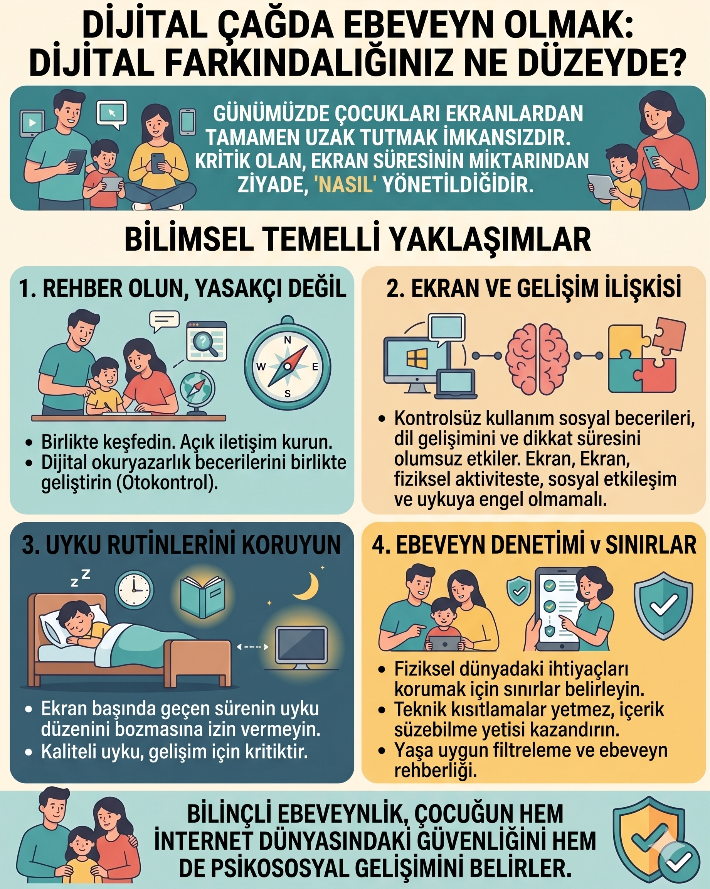

Dijital ebeveynlik

Kısa yanıt: Dijital ebeveynlik; çocuğun teknoloji kullanımını yalnızca sınırlandırmak değil, gelişim düzeyine uygun içerik seçmesine, çevrim içi riskleri tanımasına, öz denetim geliştirmesine ve dijital dünya ile günlük yaşam arasında denge kurmasına rehberlik etmektir. Sağlıklı dijital ebeveynlikte beş soru birlikte değerlendirilir: Çocuk ekranda ne yapıyor, neden kullanıyor, kiminle kullanıyor, ne zaman kullanıyor ve ekran hangi gelişimsel deneyimin yerini alıyor?
Teknolojiyi bütünüyle yasaklamak günümüz çocuklarının yaşamıyla örtüşmez. Her dijital deneyimi “zararlı” kabul etmek de her eğitsel etiketli uygulamayı “yararlı” saymak da bilimsel açıdan doğru değildir. Asıl amaç, ekranı çocuğun uykusunu, hareketini, oyununu, öğrenmesini ve yüz yüze ilişkilerini gölgelemeyen; güvenli ve amaçlı bir araç hâline getirmektir.
Dijital ebeveynlik nedir?
Dijital ebeveynlik, ebeveynin çocuğun dijital yaşamına gelişimsel rehberlik sunmasıdır. Bu rehberlik dört temel sorumluluk içerir:
- Koruma: Mahremiyet, kişisel veri, çevrim içi temas, siber zorbalık, reklam ve uygunsuz içerik risklerini azaltmak.
- Rehberlik: Çocuğun gördüğü içeriği anlamlandırmasına, sorgulamasına ve gerçek yaşamla ilişkilendirmesine yardım etmek.
- Sınır koyma: Ekranın uyku, yemek, ders, hareket, oyun ve aile iletişimini kesintiye uğratmasını önlemek.
- Model olma: Yetişkinin kendi bildirim, telefon ve sosyal medya davranışlarıyla tutarlı bir örnek sunması.
Dijital ebeveynlik yalnızca teknik filtre kurmak değildir. Parola ve ebeveyn denetimi araçları güvenliği destekleyebilir; ancak çocuğun zorlayıcı bir çevrim içi deneyimi korkmadan anlatabileceği ilişki, en önemli koruyucu yapılardan biridir.
Ekran süresi tek başına yeterli bir ölçüt mü?
Hayır. Süre önemlidir; fakat tek başına çocuğun dijital deneyiminin niteliğini açıklamaz. 2024 yılında yayımlanan, 100 araştırma ve 176.742 katılımcıyı kapsayan sistematik derleme ve meta-analiz; erken çocuklukta ekran kullanımının içeriği, türü, kullanım amacı, birlikte kullanım durumu ve aile içindeki bağlamının ayrıca değerlendirilmesi gerektiğini göstermektedir.
Araştırmada yaşa uygun olmayan içerik ve çocukla etkileşim sırasında bakım verenin ekran kullanımı daha olumsuz psikososyal sonuçlarla; arka planda açık televizyon daha olumsuz bilişsel sonuçlarla ilişkili bulunmuştur. Buna karşılık yetişkinle birlikte kullanım bilişsel sonuçlarla olumlu yönde ilişkili bulunmuştur. Etkiler genel olarak küçük ile orta düzeydedir ve çalışmaların önemli bir kısmı gözlemseldir. Bu nedenle sonuçlar neden-sonuç kanıtı olarak değil, ailelerin dikkat etmesi gereken örüntüler olarak değerlendirilmelidir.
Sağlıklı ekran kullanımında 5C yaklaşımı
Çocuğun dijital yaşamını değerlendirirken aşağıdaki beş boyut pratik bir çerçeve sunar:
1. Child — Çocuk
Çocuğun yaşı, gelişim düzeyi, mizacı, dikkat süresi ve öz düzenleme becerileri nedir? Aynı içerik iki çocuk üzerinde aynı etkiyi göstermeyebilir. Özellikle dikkat güçlüğü, uyku sorunu veya yoğun geçiş tepkileri yaşayan çocuklar daha yapılandırılmış desteğe ihtiyaç duyabilir.
2. Content — İçerik
İçerik yaşa uygun, anlaşılır, reklamsız ve çocuğun gerçek yaşam deneyimleriyle bağ kurulabilir nitelikte mi? “Eğitsel” etiketi tek başına yeterli değildir. Çocuk yalnızca hızlı uyaranlara mı maruz kalıyor, yoksa düşünüyor, üretiyor, problem çözüyor ve öğrendiğini ekran dışında kullanabiliyor mu?
3. Calm — Sakinleşme
Ekran her ağlama, sıkılma, bekleme veya öfke anında çocuğu susturmak için mi kullanılıyor? Ara sıra destek amaçlı kullanım ile ekranın çocuğun tek sakinleşme yolu hâline gelmesi aynı değildir. Çocuğun nefes alma, hareket etme, yardım isteme, duygu ifade etme ve bekleme gibi ek düzenleme yolları da öğrenmesi gerekir.
4. Crowding Out — Yerinden etme
Ekran kullanımı uykunun, fiziksel hareketin, serbest oyunun, kitap okumanın, yüz yüze iletişimin veya okul sorumluluklarının yerini alıyor mu? Bir ekran etkinliğini değerlendirirken yalnızca süresine değil, o süre içinde yapılamayan gelişimsel deneyimlere de bakılmalıdır.
5. Communication — İletişim
Ailede dijital deneyimler hakkında yalnızca sorun çıktığında mı konuşuluyor? Çocuk, rahatsız edici bir içerikle ya da kişiyle karşılaştığında cezalandırılmadan size gelebileceğini biliyor mu? Açık iletişim, dijital güvenliğin temelidir.
Dijital farkındalığınız ne düzeyde? Ebeveyn öz değerlendirme listesi
Aşağıdaki ifadeleri Evet / Kısmen / Hayır biçiminde yanıtlayın. Bu liste bilimsel bir tanı veya ölçek değildir; aile içindeki güçlü yönleri ve geliştirilmesi gereken alanları fark etmek için hazırlanmış bir düşünme aracıdır.
- Çocuğumun kullandığı uygulama, oyun ve platformların temel özelliklerini biliyorum.
- Yeni bir uygulamayı yalnızca yaş etiketine göre değil; içerik, reklam, mesajlaşma ve veri toplama özellikleri açısından da inceliyorum.
- Evimizde yemek, uyku öncesi ve ailece sohbet gibi ekransız zamanlar bulunuyor.
- Çocuğumun ekranı bırakmadan önce geçiş uyarısı almasını ve sıradaki etkinliği bilmesini sağlıyorum.
- Ekran kuralları yalnızca çocuğu değil, mümkün olduğunca yetişkinleri de kapsıyor.
- Çocuğum çevrim içi ortamda rahatsız olduğu bir şeyi ceza korkusu yaşamadan bana anlatabilir.
- Kişisel bilgi, fotoğraf paylaşımı, konum, parola ve dijital ayak izi hakkında yaşına uygun konuşmalar yapıyoruz.
- Ekran, çocuğumun her sıkılma veya öfke anında kullandığı tek sakinleşme aracı değil.
- Zaman zaman çocuğumla birlikte izliyor veya oynuyor; içerik hakkında konuşuyorum.
- Ekran kullanımının uyku, hareket, oyun, okul sorumlulukları ve aile ilişkileri üzerindeki etkisini düzenli olarak gözden geçiriyorum.
- Otomatik oynatma, bildirimler, uygulama içi satın alma ve gizlilik ayarlarını kontrol ediyorum.
- Çocuğumun görüntülerini paylaşmadan önce mahremiyetini ve gelecekteki dijital ayak izini düşünüyorum.
Sonuçlar nasıl yorumlanmalı?
- “Evet” yanıtları: Ailenizin koruyucu dijital alışkanlıklarını gösterir.
- “Kısmen” yanıtları: Küçük ve uygulanabilir bir düzenleme için öncelikli alanlardır.
- “Hayır” yanıtları: Suçluluk nedeni değil, yeni bir aile kuralı veya konuşma başlatmak için işarettir.
Toplam puandan çok hangi maddelerde zorlandığınıza odaklanın. Örneğin süreyi iyi yönetiyor ancak güvenlik konuşmalarını yapmıyorsanız dijital farkındalık planınızın önceliği mahremiyet olabilir.
Yaşa göre dijital ebeveynlik nasıl olmalı?
| Gelişim dönemi | Temel ihtiyaç | Ebeveyn yaklaşımı |
|---|---|---|
| 0–2 yaş | Yüz yüze etkileşim, hareket, duyusal keşif ve bakım verenle ortak dikkat | Ekranı mümkün olduğunca sınırlı tutun; görüntülü görüşme gibi kullanımlarda çocukla birlikte olun. Ekranın bakım veren etkileşiminin yerini almamasına dikkat edin. |
| 2–5 yaş | Dil, sembolik oyun, hareket ve duygu düzenleme | Yaşa uygun, yavaş tempolu ve reklamsız içerik seçin; birlikte izleyin ve ekrandakini gerçek yaşamla ilişkilendirin. |
| 6–9 yaş | Kuralı anlama, dijital okuryazarlık ve öz denetimin temelleri | Zaman, içerik ve mekân kurallarını birlikte belirleyin; reklam, satın alma, çevrim içi nezaket ve kişisel bilgi üzerine konuşun. |
| 10–12 yaş | Artan bağımsızlık, akran ilişkileri ve mahremiyet | Denetimi tamamen bırakmadan iş birliğini artırın; grup mesajları, oyun içi iletişim, siber zorbalık ve dijital ayak izini ele alın. |
| 13 yaş ve üzeri | Kimlik, aidiyet, özerklik ve eleştirel düşünme | Gizli gözetim yerine açık anlaşmalar kurun; algoritmalar, beden algısı, yanlış bilgi, çevrim içi ilişkiler ve yardım isteme yollarını tartışın. |
Bu öneriler katı yaş sınırları değildir. Çocuğun gelişimsel yeterliği, platformun özellikleri ve aile bağlamı birlikte değerlendirilmelidir.
Aile medya planı nasıl hazırlanır? 10 adım
1. Ailenizin dijital önceliğini belirleyin
İlk hedefiniz “ekranı tamamen azaltmak” gibi belirsiz bir amaç olmasın. “Yemek sırasında telefon kullanılmaması” veya “uyku öncesi geçişin düzenlenmesi” gibi gözlenebilir bir hedef seçin.
2. Ekransız zaman ve alanları birlikte belirleyin
Yemek masası, aile sohbeti ve uyku öncesi zaman dilimi başlangıç için uygun seçeneklerdir. Amerikan Pediatri Akademisi, aile bağını, öğrenmeyi ve uykuyu korumak amacıyla ekransız alan ve zamanlar oluşturulmasını önermektedir.
3. Önce temel ihtiyaçları koruyun
Uyku, hareket, okul sorumlulukları, serbest oyun ve yüz yüze iletişim için yeterli alan kalıp kalmadığını değerlendirin. Ekran planı günlük yaşamın geri kalanından bağımsız oluşturulmamalıdır.
4. İçeriği birlikte seçin
Yeni içeriklerde yaş uygunluğu, reklamlar, sohbet özelliği, satın alma seçeneği ve veri toplama politikalarını kontrol edin. İçeriği birkaç dakika birlikte deneyimlemek, yalnız açıklamasını okumaktan daha fazla bilgi verebilir.
5. Bildirimleri ve otomatik oynatmayı kapatın
Bu özellikler çocuğun kullanımı kendi isteğiyle sonlandırmasını zorlaştırabilir. Tek ekran kuralı, kapalı arka plan televizyonu ve azaltılmış bildirimler dikkat dağınıklığını sınırlamaya yardımcı olabilir.
6. Geçiş rutini oluşturun
Ekranı kapatmak çocuk için ödüllendirici bir etkinlikten ayrılmak anlamına gelebilir. “On dakika kaldı → son bölüm/son tur → cihazı şarj yerine bırak → sonraki etkinliği seç” gibi öngörülebilir bir sıra kullanın.
7. Birlikte kullanım fırsatları yaratın
Birlikte kullanım, ekrana sessizce yan yana bakmaktan ibaret değildir. “Sence karakter neden böyle yaptı?”, “Bunu evde deneyebilir miyiz?” gibi sorularla içeriği konuşmaya ve gerçek yaşam deneyimine dönüştürün.
8. Dijital güvenlik konuşmalarını olağanlaştırın
Çocuğa; kişisel bilgi vermeme, tanımadığı bağlantıları açmama, rahatsız edici iletişimi engelleme ve güvendiği yetişkine haber verme yollarını öğretin. UNICEF, çocuklarla kimlerle ve nasıl iletişim kurdukları, paylaşımlarını kimlerin görebileceği ve dijital ayak izi hakkında açık konuşmalar yapılmasını önermektedir.
9. Yetişkin kurallarını da yazın
“Çocuğum konuşurken telefonuma bakmayacağım”, “Yemek masasına telefon getirmeyeceğim” veya “Paylaşmadan önce çocuğumun onayını ve mahremiyetini düşüneceğim” gibi yetişkin taahhütleri ekleyin. Kuralların yalnız çocuğa uygulanması çatışmayı artırabilir.
10. Planı düzenli olarak güncelleyin
Okul dönemi, tatil, yeni cihaz, yeni oyun veya gelişimsel değişiklikler planın yeniden ele alınmasını gerektirir. Amaç bir kez yazılan değişmez sözleşme değil, aileyle birlikte gelişen bir rehber oluşturmaktır.
Çocuk ekranı kapatmak istemiyorsa ne yapılmalı?
Ekranı kapatmaya verilen her tepki “bağımlılık” anlamına gelmez. Çocuk keyifli bir etkinliği sonlandırmakta, belirsiz bir sonraki adıma geçmekte veya yoğun uyarandan ayrılmakta zorlanabilir.
Şu sırayı deneyebilirsiniz:
- Kuralı ekran açılmadan önce açıklayın.
- Bitişe 10 ve 2 dakika kala kısa uyarı verin.
- Bitirme noktasını somutlaştırın: son tur, son bölüm veya zamanlayıcı.
- Sonraki etkinliği görünür hâle getirin.
- Duyguyu kabul edin ancak sınırı tartışmaya açmayın: “Devam etmek istediğini biliyorum. Süremiz bitti. Şimdi cihazı yerine bırakıyoruz.”
- Çocuk sakinleştikten sonra neyin zor geldiğini konuşun.
Ekranı aniden elinden almak, uzun nasihat vermek veya her itirazda süreyi uzatmak geçişi daha zor hâle getirebilir. Tutarlılık, sertlik anlamına gelmez.
Dijital güvenlikte ebeveynlerin dikkat etmesi gerekenler
- Hesapları mümkün olan en yüksek gizlilik düzeyinde ayarlayın.
- Konum paylaşımını ve uygulama izinlerini kontrol edin.
- Parolaların kişiye özel olduğunu ve arkadaşlarla paylaşılmaması gerektiğini öğretin.
- Çocuğun fotoğraf ve videolarını paylaşmadan önce mahremiyetini değerlendirin.
- Oyun içi sohbet, canlı yayın, özel mesaj ve uygulama içi satın alma özelliklerini inceleyin.
- Çocuğa rahatsız edici içeriği kapatma, ekran görüntüsü alma, engelleme, bildirme ve yetişkine söyleme adımlarını öğretin.
- Çevrim içi tanışılan kişinin söylediği kişi olmayabileceğini yaşa uygun bir dille açıklayın.
- Sorun anlattığında ilk tepkinizin cihazı tamamen almak değil, güvenliği sağlamak ve dinlemek olmasına dikkat edin.
Ne zaman profesyonel destek düşünülmeli?
Ekran kullanımı nedeniyle uyku, beslenme, okul devamı, aile ilişkileri veya günlük sorumluluklar belirgin biçimde bozuluyorsa; çocuk kullanımı azaltmayı tekrar tekrar deneyip başaramıyorsa; ekran dışı etkinliklere ilgisi ciddi ölçüde azaldıysa ya da çevrim içi yaşantılar yoğun kaygı ve davranış değişikliği oluşturuyorsa kapsamlı değerlendirme düşünülebilir.
Bu belirtiler tek başına tanı koydurmaz. Dikkat güçlüğü, kaygı, depresif belirtiler, akran sorunları, öğrenme güçlüğü veya aile içi stres hem ekran kullanımını etkileyebilir hem de ekran sorununa benzer görünebilir. Değerlendirme yalnız “kaç saat kullanıyor?” sorusuyla sınırlı kalmamalıdır.
Sonuç
Dijital farkındalığı yüksek ebeveyn, her teknolojiyi yasaklayan kişi değildir. Çocuğun dijital dünyada karşılaştığı fırsatları ve riskleri tanıyan; gelişimsel ihtiyaçları koruyan; açık, tutarlı ve yaşa uygun sınırlar kuran; gerektiğinde çocuğuyla birlikte öğrenebilen kişidir.
Bugün başlamak için bütün kuralları değiştirmeyin. Aileniz için tek bir alan seçin: yemek masasını ekransızlaştırmak, uyku öncesi bildirimleri kapatmak, yeni bir oyunu birlikte incelemek veya çocuğunuzla dijital ayak izi hakkında konuşmak. Küçük fakat sürdürülebilir değişiklikler, katı ve kısa ömürlü yasaklardan daha işlevsel olabilir.
Sık sorulan sorular
Dijital ebeveynlik yalnızca ekran süresini sınırlamak mıdır?
Hayır. Dijital ebeveynlik; süreyle birlikte içerik, kullanım amacı, birlikte kullanım, güvenlik, mahremiyet, yetişkin modeli ve ekranın hangi günlük etkinliklerin yerini aldığıyla ilgilenir.
Eğitsel uygulamalar ekran süresine dâhil midir?
Ekran karşısında geçirilen zaman açısından dâhildir; ancak bütün ekran deneyimleri gelişimsel olarak eş değer değildir. İçeriğin niteliği, çocuğun pasif mi etkileşimli mi olduğu, yetişkin eşliği ve öğrendiklerini ekran dışında kullanıp kullanamadığı ayrıca değerlendirilmelidir.
Çocukla birlikte ekran kullanmak yararlı mıdır?
Yaşa uygun içerikte aktif birlikte kullanım öğrenmeyi destekleyebilir. Yetişkinin sorular sorması, açıklama yapması ve ekrandakini gerçek yaşamla ilişkilendirmesi önemlidir. Birlikte kullanım, sınırsız ekran süresini güvenli hâle getiren bir yöntem değildir.
Ebeveyn kontrolü uygulamaları yeterli koruma sağlar mı?
Hayır. Teknik araçlar riski azaltabilir fakat hatasız değildir. En güçlü koruma; yaşa uygun teknik ayarlar, düzenli ebeveyn ilgisi, dijital okuryazarlık ve çocuğun sorun yaşadığında yardım isteyebileceği güvenli ilişkinin birlikte bulunmasıdır.
Ekran kullanımı çocuğu bağımlı yapar mı?
Yoğun kullanım tek başına bağımlılık tanısı anlamına gelmez. Kontrol kaybı, günlük işlevlerde bozulma, kullanımı azaltamama ve diğer etkinliklerin belirgin biçimde geri plana düşmesi gibi örüntüler birlikte değerlendirilmelidir. Endişe varsa kapsamlı uzman değerlendirmesi alınmalıdır.
Çocuğun fotoğrafını sosyal medyada paylaşmak güvenli midir?
Her paylaşım çocuğun dijital ayak izine eklenebilir. Kimlerin görebileceği, konum ve okul bilgisi içerip içermediği, görüntünün ileride çocuğu utandırma veya kötüye kullanılma olasılığı düşünülmelidir. Çocuğun yaşı uygunsa görüşü ve onayı alınmalıdır.
Kaynaklar
- American Academy of Pediatrics. (2026). *Digital Ecosystems, Children, and Adolescents: Policy Statement*. Pediatrics, 157(2), e2025075320.
- American Academy of Pediatrics Council on Communications and Media. (2026). *How to Make a Family Media Plan*. HealthyChildren.org.
- Mallawaarachchi, S., Burley, J., Mavilidi, M., et al. (2024). *Early Childhood Screen Use Contexts and Cognitive and Psychosocial Outcomes: A Systematic Review and Meta-analysis*. JAMA Pediatrics, 178(10), 1017–1026. https://doi.org/10.1001/jamapediatrics.2024.2620
- Madigan, S., McArthur, B. A., Anhorn, C., Eirich, R., & Christakis, D. A. (2020). *Associations Between Screen Use and Child Language Skills: A Systematic Review and Meta-analysis*. JAMA Pediatrics, 174(7), 665–675. https://doi.org/10.1001/jamapediatrics.2020.0327
- Eirich, R., McArthur, B. A., Anhorn, C., McGuinness, C., Christakis, D. A., & Madigan, S. (2022). *Association of Screen Time With Internalizing and Externalizing Behavior Problems in Children 12 Years or Younger: A Systematic Review and Meta-analysis*. JAMA Psychiatry, 79(5), 393–405. https://doi.org/10.1001/jamapsychiatry.2022.0155
- World Health Organization. (2019). *Guidelines on Physical Activity, Sedentary Behaviour and Sleep for Children Under 5 Years of Age*.
- UNICEF. *How to Keep Your Child Safe Online*.
---